네트워크관리사-2급 (2022-05-22 기출문제)
1과목: TCP/IP
1. IPv4의 IP Address 할당에 대한 설명으로 옳지 않은 것은?
- 모든 Network ID와 Host ID의 비트가 '1'이 되어서는 안 된다.
- Class B는 최상위 2비트를 '10'으로 설정한다.
- Class A는 최상위 3비트를 '110'으로 설정한다.
- '127.x.x.x' 형태의 IP Address는 Loopback 주소를 나타내는 특수 Address로 할당하여 사용하지 않는다.
(정답률: 81%)

2. C Class의 네트워크 주소가 ′192.168.10.0′ 이고, 서브넷 마스크가 ′255.255.255.240′ 일 때, 최대 사용 가능한 호스트 수는?(단, 네트워크 주소와 브로드캐스트 호스트는 제외한다.)
- 10개
- 14개
- 26개
- 32개
(정답률: 83%)
3. 패킷 전송의 최적 경로를 위해 다른 라우터들로부터 정보를 수집하는데, 최대 홉이 15를 넘지 못하는 프로토콜은?
- RIP
- OSPF
- IGP
- EGP
(정답률: 82%)
4. TCP 프로토콜에서 사용하는 흐름제어 방식은?
- GO-Back-N
- 선택적 재전송
- Sliding Window
- Idle-RQ
(정답률: 83%)
5. IPv6 헤더 형식에서 네트워크 내에서 혼잡 상황이 발생되어 데이터그램을 버려야 하는 경우 참조되는 필드는?
- Version
- Priority
- Next Header
- Hop Limit
(정답률: 72%)
6. ARP에 대한 설명으로 올바른 것은?
- Ethernet 주소를 IP Address로 매핑시킨다.
- ARP를 이용하여 IP Address가 중복되어 사용되는지 찾을 수 있다.
- ARP 캐시는 일정한 주기를 갖고 갱신된다.
- 중복된 IP가 발견된 경우 ARP 캐시는 갱신되지 않는다.
(정답률: 55%)
7. ICMP의 Message Type필드의 유형과 질의 메시지 내용을 나타낸 것이다. 타입에 대한 설명으로 옳지 않은 것은?
- 3 - Echo Request 질의 메시지에 응답하는데 사용된다.
- 4 - 흐름제어 및 폭주제어를 위해 사용된다.
- 5 - 대체경로(Redirect)를 알리기 위해 라우터에 사용한다.
- 17 - Address Mask Request 장비의 서브넷 마스크를 요구하는데 사용된다.
(정답률: 68%)
8. 인터넷의 잘 알려진 포트(Well-Known Port) 번호로 옳지 않은 것은?
- 23번 – FTP
- 25번 – SMTP
- 80번 – WWW
- 110번 - POP
(정답률: 75%)
9. TFTP 프로토콜에 대한 설명 중 옳지 않은 것은?
- Trivial File Transfer Protocol의 약어이다.
- 네트워크를 통한 파일 전송 서비스이다.
- 3방향 핸드셰이킹 방법인 TCP 세션을 통해 전송한다.
- 신속한 파일의 전송을 원할 경우에는 FTP보다 훨씬 큰 효과를 얻을 수 있다.
(정답률: 75%)
10. SMTP에 대한 설명으로 올바른 것은?
- WWW에서 사용하는 데이터 전송 프로토콜이다.
- 네트워크 장비들을 관리하기 위한 프로토콜이다.
- 파일 전송을 위한 프로토콜이다.
- 인터넷 전자 우편을 위한 프로토콜이다.
(정답률: 86%)
11. UDP 패킷의 헤더에 속하지 않는 것은?
- Source Port
- Destination Port
- Window
- Checksum
(정답률: 79%)
12. IP 데이터그램 헤더구조의 Field Name으로 옳지 않은 것은?
- Destination IP Address
- Source IP Address
- Port Number
- TTL(Time to Live)
(정답률: 71%)
13. (A) 안에 들어가는 용어 중 옳은 것은?
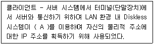
- ARP
- Proxy ARP
- Inverse ARP
- Reverse ARP
(정답률: 61%)
14. OSI 7 layer 참조 모델에서 사용되는 Protocols 중 TCP와 UDP port를 함께 사용하는 프로토콜은?
- SMTP
- FTP
- DNS
- Telnet
(정답률: 73%)
15. 다음 그림은 TCP 기능 중 3Way-Handshake를 설명한 그림이다. Host간 연결 성립(Established)을 위한 Process에서 Host B에서 HOST A에 전달하는 flag bit는 무엇인가?
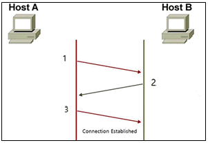
- SYN – ACK
- ACK – FIN
- SYN – FIN
- PSH - ACK
(정답률: 72%)
16. TCP/IP protocol stack에서 사용되는 SNMP 프로토콜의 기능으로 올바른 것은?
- 대규모 환경의 망 관리 기능
- 네트워크 장비의 에러 보고 기능
- 네트워크 장비의 관리 및 감시 기능
- 호스트 간에 연결성 점검과 네트워크 혼잡 제어 기능
(정답률: 60%)
17. 멀티캐스트(Multicast)에 사용되는 IP Class는?
- A Class
- B Class
- C Class
- D Class
(정답률: 65%)
2과목: 네트워크 일반
18. OSI 7 Layer의 전송 계층에서 동작하는 프로토콜들만으로 구성된 것은?
- ICMP, NetBEUI
- IP, TCP
- TCP, UDP
- NetBEUI, IP
(정답률: 81%)
19. IEEE 802 프로토콜의 연결이 올바른 것은?
- IEEE 802.3 : 토큰 버스
- IEEE 802.4 : 토큰 링
- IEEE 802.11 : 무선 LAN
- IEEE 802.5 : CSMA/CD
(정답률: 74%)
20. 다음 지문의 (A)에 알맞은 용어는?
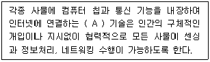
- Internet of Things
- Mobile Cloud Computing
- Big Data
- RFID
(정답률: 72%)
21. 다음에서 설명하는 것은 무엇을 의미하는가?
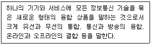
- 디지타이징(Digitizing)
- 디지털 컨버전스(Digital Convergence)
- 클라우드 컴퓨팅(Cloud Computing)
- 유비쿼터스 컴퓨팅(Ubiquitous Computing)
(정답률: 62%)
22. OSI 7 Layer 중 세션계층의 역할로 옳지 않은 것은?
- 대화 제어
- 에러 제어
- 연결 설정 종료
- 동기화
(정답률: 67%)
23. VPN에 대한 설명으로 (A)에 알맞은 용어는?
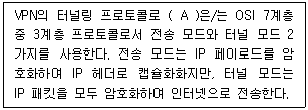
- PPTP
- L2TP
- IPSec
- SSL
(정답률: 61%)
24. 센서 네트워크에서 센서 노드들의 센싱 데이터를 수집하는 노드는?
- Sink
- Actuator
- RFID
- Access Point
(정답률: 68%)
25. 다음 (A) 안에 들어가는 용어 중 옳은 것은?
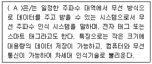
- Bar Code
- Bluetooth
- RFID
- WiFi
(정답률: 68%)
26. 다음 설명의 (A)에 들어갈 알맞은 용어는 무엇인가?
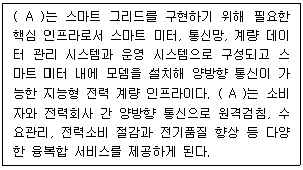
- DR (Demand Response)
- EMS (Energy Management System)
- AMI (Advanced Metering Infrastructure)
- TDA (Transmission & Distribution Automation)
(정답률: 50%)
27. 다음 (A) 안에 들어가는 용어 중 옳은 것은?
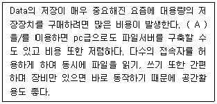
- Storage
- NAS
- USB HDD
- Server
(정답률: 64%)
3과목: NOS
28. Windows Server 2016에서 자신의 네트워크 안에 있는 클라이언트 컴퓨터가 부팅될 때 자동으로 IP 주소를 할당해주는 서버는?
- DHCP 서버
- WINS 서버
- DNS 서버
- 터미널 서버
(정답률: 74%)
29. Linux 시스템에서 사용자가 내린 명령어를 Kernel에 전달해주는 역할을 하는 것은?
- System Program
- Loader
- Shell
- Directory
(정답률: 79%)
30. Linux에서 사용자에 대한 패스워드의 만료기간 및 시간 정보를 변경하는 명령어는?
- chage
- chgrp
- chmod
- usermod
(정답률: 75%)
31. Linux에서 DNS의 SOA(Start Of Authority) 레코드에 대한 설명으로 옳지 않은 것은?
- Zone 파일은 항상 SOA로 시작한다.
- 해당 Zone에 대한 네임서버를 유지하기 위한 기본적인 자료가 저장된다.
- Refresh는 주 서버와 보조 서버의 동기 주기를 설정한다.
- TTL 값이 길면 DNS의 부하가 늘어난다.
(정답률: 66%)
32. Linux 시스템에서 특정 파일의 권한이 ′-rwxr-x--x′ 이다. 이 파일에 대한 설명 중 옳지 않은 것은?
- 소유자는 읽기 권한, 쓰기 권한, 실행 권한을 갖는다.
- 소유자와 같은 그룹을 제외한 다른 모든 사용자는 실행 권한만을 갖는다.
- 이 파일의 모드는 ′751′ 이다.
- 동일한 그룹에 속한 사용자는 실행 권한만을 갖는다.
(정답률: 61%)
33. Linux 시스템에서 기본적으로 시스템 설정 파일이 위치하는 디렉터리는?
- /etc
- /bin
- /var
- /dev
(정답률: 64%)
34. Linux 시스템 명령어 중 root만 사용가능한 명령은?
- chown
- pwd
- Is
- rm
(정답률: 69%)
35. Linux에서 프로세스와 관련된 명령어에 대한 설명 중 옳지 않은 것은?
- kill - 프로세스를 종료시키는 명령어
- nice - 프로세스의 우선순위를 변경하는 명령어
- pstree - 프로세스를 트리형태로 보여주는 명령어
- top - 가장 우선순위가 높은 프로세스를 보여주는 명령어
(정답률: 67%)
36. 서버 담당자 Park 사원은 Windows Server 2016에서 폴더에 저장할 수 있는 용량을 제한하고, 특정한 파일의 유형은 업로드하지 못하도록 설정하고자 한다. 이러한 설정을 통해서 서버 담당자는 좀 더 유연하고 안전한 파일서버를 구축할 수 있게 된다. 다음 중 서버 담당자가 구축해야 할 적절한 서비스는 무엇인가?
- FSRM(File Server Resource Manager)
- FTP(File Transfer Protocol)
- DFS(Distribute File System)
- Apache Server
(정답률: 67%)
37. 서버 관리자 Park 사원은 Windows Server 2016의 Active Directory에서 도메인 사용자 계정을 관리하기 위해 도메인 사용자 계정을 생성/수정/삭제하려고 한다. 다음 중 도메인 사용자 계정을 관리하기 위한 명령어가 아닌 것은 ?
- dsadd
- dsmod
- dsrm
- net user
(정답률: 70%)
38. 서버 담당자 Park 사원은 Windows Server 2016에서 사용할 수 있는 네트워크 스토리지를 구현하고자 한다. 다음 조건에서 설명하는 방식의 네트워크 스토리지로 알맞은 것은?
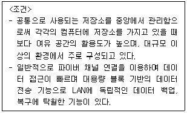
- NAS(Network Attached Storage)
- SAN(Storage Area Network)
- RAID(Redundant Array of Inexpensive Disks)
- SSD(Solid State Drive)
(정답률: 60%)
39. 서버 담당자 Park 사원은 1대의 서버가 아니라 여러 대의 웹서버를 운영해서, 웹 클라이언트가 서비스를 요청할 경우에 교대로 서비스를 실행하는 방법으로 웹 서버의 부하를 여러 대가 공평하게 나눌 수 있도록 설계하고자 한다. 이에 적절한 서비스 방식을 무엇이라 하는가?
- Round Robin
- Heartbeat
- Failover Cluster
- Non-Repudiation
(정답률: 73%)
40. Windows Server 2016가 설치된 컴퓨터는 항상 가동하는 것이 일반적인 용도이기 때문에 서버 담당자 Park 사원은 시스템을 종료할 때마다 그 이유를 명확히 하여 시스템을 좀 더 안정적으로 운영하고자 한다. 다음 중 이전에 종료 또는 재부팅된 기록을 확인할 수 있는 항목은?
- 성능모니터
- 이벤트뷰어
- 로컬보안정책
- 그룹정책편집기
(정답률: 63%)
41. 다음 (A)에 해당하는 것은?
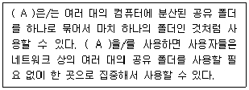
- 분산 파일 시스템
- 삼바(SAMBA)
- ODBC
- 파일 전송 프로토콜
(정답률: 71%)
42. FTP는 원격 서버에 파일을 주고받을 때 사용하는 프로토콜이다. FTP는 2가지 Mode로 구분되는데, 서버에서 따로 포트 대역을 설정해주고 서버는 임의로 지정된 데이터 포트정보를 클라이언트에 보내 클라이언트에서 해당 포트로 접속하는 방식은 무엇인가?
- Active Mode
- Passive Mode
- Privileges Mode
- Proxy Mode
(정답률: 51%)
43. 네임서버 레코드 정보를 변경한지 충분한 시일이 지났지만 특정 기기에서 해당(기존) 도메인으로 접속이 원할한 경우, 컴퓨터에 DNS cache가 갱신되지 않아 발생할 수 있다. DNS cache를 초기화 하는 명령어는 어느것인가?
- ipconfig /displydns
- ipconfig /flushdns
- ipconfig /release
- ipconfig /renew
(정답률: 52%)
44. 서버 관리자 John은 Windows Server 2016이 설치된 서버의 용량이 부족하여 4TB 하드디스크를 추가하였다. 올바른 파티션 형식은?
- FAT(File Allocation Table)
- ext4(extended file system 4)
- GPT(GUID Partition Table)
- MBR(Master Boot Record)
(정답률: 53%)
45. 네트워크를 담당하는 Lee 사원은 네트워크 연결을 구축하거나 문제를 해결할 때 패킷이 출발지에서 목적지까지 가는 경로를 살펴보고자 한다. 서버에서 작업하고 있는 특정 대상을 위한 패킷이 올바른 NIC로 흘러나가는지 확인하고자 할 때 사용할 수 있는 명령어는?
- ping
- nbtstat
- pathping
- netstat
(정답률: 62%)
4과목: 네트워크 운용기기
46. OSI 7계층 중 물리 계층에서만 사용하는 장비로써 근거리통신망(LAN)의 전송매체상에 흐르는 신호를 정형, 증폭, 중계하는 것은 무엇인가?
- Router
- Repeater
- Bridge
- Gateway
(정답률: 71%)
47. 로드밸런싱(Load Balancing)에 대한 설명이 맞는 것은?
- 물리적인 망 구성과는 상관없이 가상적으로 구성된 근거리 통신망 기술
- 사용량과 처리량을 증가시키고 지연율을 낮추며 응답시간을 감소시키고 시스템 부하를 피할 수 있게 하는 최적화 기술
- 가상머신이 실행되고 있는 물리적 컴퓨터로부터 분리된 또 하나의 컴퓨터
- 웹 브라우저와 서버 간의 통신에서 정보를 암호화하는 기술
(정답률: 73%)
48. OSPF(Open Shortest Path First) 프로토콜에 대한 설명으로 옳지 않은 것은?
- OSPF는 AS의 네트워크를 각 Area로 나누고 Area들은 다시 Backbone으로 연결이 되어 있는 계층구조로 되어있다.
- Link-State 알고리즘을 사용하여 네트워크가 변경이 되더라도 컴버전스 시간이 짧고 라우팅 루프가 생기지 않는다.
- VLSM(Variable Length Subnet Mask) 구성이 가능하기 때문에 한정된 IP Address를 효과적으로 활용할 수 있다.
- 라우터 사이에 서로 인증(Authentication)하는 것이 가능하여 관리자의 허가 없이 라우터에 쉽게 접속하고 네트워크를 확장할 수 있다.
(정답률: 64%)
49. 아래 지문이 설명하는 용어는 무엇인가?
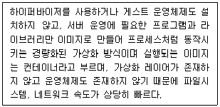
- VirtualBox
- Vmware
- Zen
- Docker
(정답률: 66%)
50. 사람의 머리카락 굵기만큼의 가는 유리 섬유로 정보를 보내고 받는 속도가 가장 빠르고 넓은 대역폭을 장점도 있지만 구리선에 비해 가격이 비싸고 설치나 유지보수가 어렵다는 단점이 있는 케이블은 무엇인가?
- Coaxial Cable
- Twisted Pair
- Thin Cable
- Optical Fiber
(정답률: 74%)